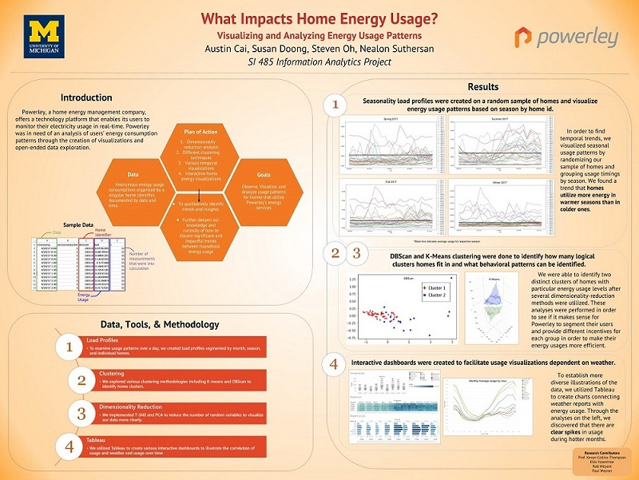

This project was completed in 2018 for my University of Michigan School of Information senior analytics capstone project. I worked with three other analytics students to serve our client, which was a locally-based energy management platform, Powerley. Over the course of a semester, I analyzed data through the use of load profile visualizations, dimensionality reduction methods, and clustering in order to uncover trends and patterns for our client. Through this project, on top of applying my analytical skills and background from school, I was able to get experience on a real, applicable business problem as well as communicating and working with professional clients.
In general, our project question was very broad. Because there was no specific problem to solve other than identifying patterns and anomalies in the data, we had the freedom to choose which aspects to explore. As such, our research project consisted primarily of visualizations and clustering analyses of home energy usages. We determined that the basis of the project was an exploratory analysis to see if trends can be observed to better advise homeowners in terms of efficient energy consumption. Overall, our analysis was based in the coding language Python with usage of data visualization and analytics tools including pandas and matplotlib as well as the interactive analytics software Tableau.
Our analysis shed light on temporal and external trends in energy usages as well as the behavior of individual, within-home usage patterns. We determined that there was a higher consumption of energy in hotter times of the year--for example, in summer months-- and higher usage in mornings and early evenings. Furthermore, our analysis found a general trend of higher usage in wealthier communities. Click on the poster to view our findings!
